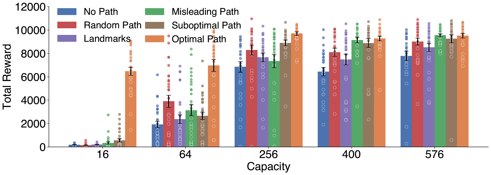
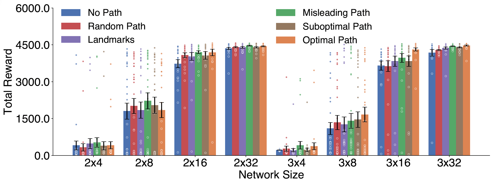

The situated view of cognition holds that intelligent behavior depends not only on internal memory, but on an agent's active use of environmental resources. Here, we begin formalizing this intuition within Reinforcement Learning (RL). We introduce a mathematical framing for how the environment can functionally serve as an agent's memory, and prove that certain observations, which we call artifacts, can reduce the information needed to represent history. We corroborate our theory with experiments showing that when agents observe spatial paths, the amount of memory required to learn a performant policy is reduced. Interestingly, this effect arises unintentionally, and implicitly through the agent's sensory stream. We discuss the implications of our findings, and show they satisfy qualitative properties previously used to ground accounts of external memory. Moving forward, we anticipate further work on this subject could reveal principled ways to exploit the environment as a substitute for explicit internal memory.
We formalize artifacts as features of the environment that help an agent remember its past: a folded page corner, a string tied around a finger, a footprint in the snow.
Definition (Artifact)
An observation $o$ is an artifact of $o'$ if and only if $o' \neq o$ and for all $t$, if $O_t = o$, there exists some non-zero $t' < t$ such that $O_{t'} = o'$.
Our main theoretical result proves artifacts strictly reduce the information needed to represent a history.
Theorem (Artifact Reduction)
Let $\xi$ be an artifactual environment, and let $H$ be a history from $\xi$ containing $m>1$ observations and at least one artifact. There exists a reduced sequence $H'$ with $m-1$ observations such that
$$\mathbb{I}(O_{t+1}; H) = \mathbb{I}(O_{t+1}; H').$$
An agent externalizes memory when achieving a goal requires more internal capacity in the absence of environmental artifacts than when those artifacts are available. We compare an artifactual environment $\xi$ to an artifactless copy $\xi'$ and require there exists $\pi'$ with $P_\xi \geq P'_{\xi'}$ and capacity $C < C'$, while no smaller-capacity agent matches $\pi$'s performance in $\xi'$.
Agents learn to navigate a $13\times13$ gridworld emitting noisy salt-and-pepper images. We compare learning under different artifact conditions across a range of system capacities, with both Linear Q-learning and DQN.
When the shortest path is visible, agents reach goal performance with substantially less internal capacity — well below the theoretical $169$-dimensional minimum.
Externalization persists across suboptimal, random, and even non-behavioral landmark artifacts — ruling out the explanation that agents merely follow the path.
In a non-stationary setting, agents leave behind their own fading trail, suggesting they read and write to the environment without explicit instruction.

Linear Q-learning

DQN
Across every experiment, the use of external memory arises unintentionally. The reward signal incentivizes only reaching the goal, never following or laying down a path, yet the artifact effect emerges naturally from reinforcement learning in a sufficiently complex environment.
@misc{martin2026artifactsmemoryagentboundary,
title = {Artifacts as Memory Beyond the Agent Boundary},
author = {John D. Martin and Fraser Mince and Esra'a Saleh and Amy Pajak},
year = {2026},
journal = {arXiv preprint arXiv: Arxiv-2604.08756}
}